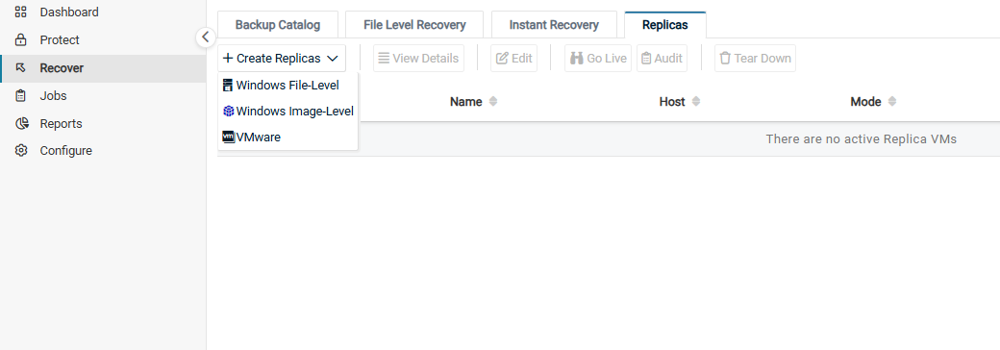
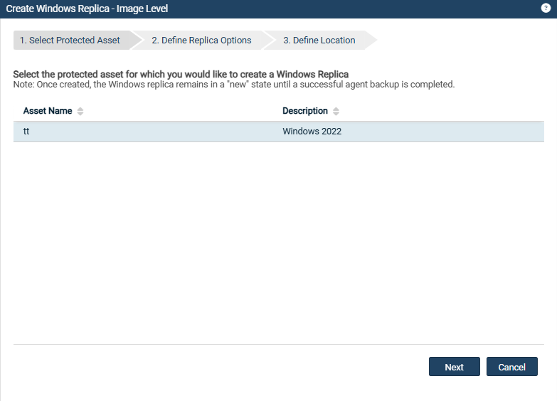
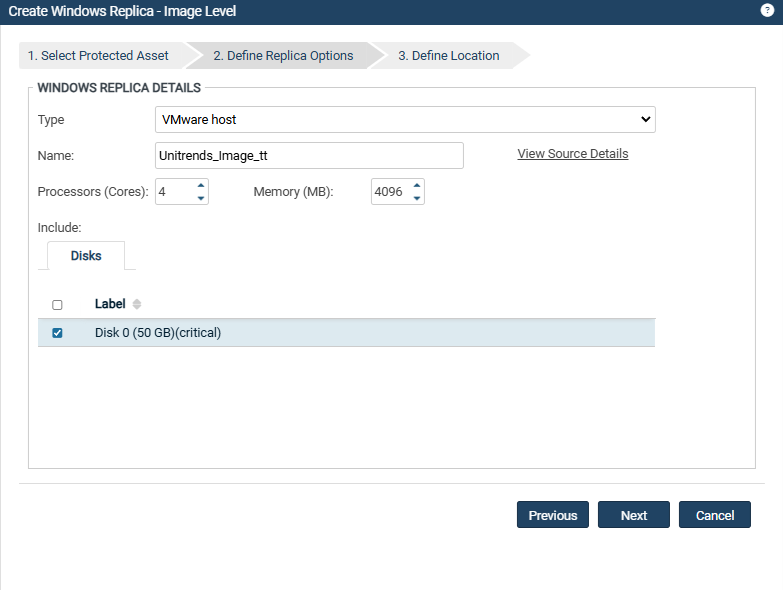

Replica 복제본(Windows 이미지백업)#
Windows 이미지 복제(Replica) 기능은 물리적 Windows 서버가 정상 작동하지 않을 때 빠르게 복구할 수 있는 방법을 제공합니다.
이 기능은 Windows 서버의 VM 복제본을 생성한 뒤, 원본 Windows 백업이 실행될 때마다 이를 VM 복제본에 적용하여 최신 상태로 유지합니다.
재해 발생 시, VM 복제본을 온라인 상태로 전환하여 정상 작동하지 않는 서버의 역할을 즉시 수행할 수 있습니다.
1. 기능 사용 방법#
(1) Replica 생성창을 통해 복제본을 설정합니다.
Unitrends 어플라이언스는 Windows 서버의 가장 최근 백업 데이터를 기반으로 VM 복제본을 생성합니다.
이후 모든 후속 백업이 자동으로 VM 복제본에 적용됩니다.VM 복제본이 지속적으로 업데이트되므로, 필요 시 언제든 실운영환경에서 사용할 준비가 되어 있습니다.
(2) VM 복제본의 위치 지정
VM 복제본은 다음 위치 중 하나에 생성할 수 있습니다.
VMware ESXi 호스트
Hyper-V 서버
(3) 복제본의 상태
VM 복제본은 지정된 위치에서 “Cold Standby” 상태로 생성됩니다.
VM 복제본은 전원이 꺼진 상태로 유지되며 네트워크 연결이 없습니다.
백업이 적용되는 동안에도 복제본은 전원이 꺼져 있으므로 리소스를 소비하지 않습니다.
2. 복제본 생성 후 가능한 작업#
① 복제본 검증(Audit)
VM 복제본의 무결성, 데이터, 애플리케이션을 검증할 수 있습니다.
검증 모드(Audit Mode)에서는 복제본이 Private Network에서 실행되며, 운영 네트워크에서는 접근할 수 없습니다.
원본 Windows 서버가 실운영환경에서 작동 중인 상태에서 VM 복제본을 검증할 수 있습니다.
권장: 복제본이 예상대로 작동하는지 정기적으로 검증 모드(Audit Mode)를 통해 확인하세요.
② 복제본을 실운영환경에 적용
VM 복제본을 운영 환경에서 온라인 상태로 전환하여 원본 서버의 역할을 즉시 수행하도록 설정할 수 있습니다.
용도: 복제본은 원본 서버를 새 하드웨어에 복구(Bare Metal Recovery)하기 전까지 임시 대체로 사용됩니다.
원할 경우 복제본을 영구 대체로 사용할 수도 있습니다.
3. 백업 요구사항#
이미지 복제본을 생성하려면 물리적 Windows 서버의 이미지 백업이 필요합니다.
① 복제본을 생성하려면 백업에 부팅 볼륨 및 중요한 시스템(OS) 볼륨이 반드시 포함되어야 합니다.
② VM 복제본은 선택한 백업 데이터를 기반으로 생성됩니다. 그러므로 백업에서 제외된 볼륨은 복구되지 않습니다.
③ Windows 서버의 최신 복구 지점을 확보하기 위해 정기적으로 백업을 수행해야 합니다.
4. VMware ESXi에서 복제본 실행을 위한 요구사항#
하이퍼바이저 버전
ESXi 호스트는 ESXi 5.1 이상의 버전을 실행해야 합니다.
Windows 서버의 운영 체제(OS)를 지원해야 합니다.
ex) Windows Server 2016 시스템의 복제본은 ESXi 5.1 호스트에 위치할 수 없습니다.
가상 호스트
ESXi 호스트를 Unitrends 어플라이언스에 대상으로 추가해야 합니다.
컴퓨팅 리소스(메모리)
VM 복제본 하나당 최소 2048MB의 메모리가 필요합니다.
메모리 값은 4의 배수여야 합니다.
VM 복제본 변경 금지
Replica 생성창에서 복제본을 구성한 이후, VM 복제본에 변경을 가하지마세요.
복제본이 라이브 모드(Live Mode)에 있지 않은 상태에서 변경할 경우, 복제본이 일관되지 않은 상태에 빠질 수 있습니다.
초대 디스크 크기
디스크 크기는 하이퍼바이저가 지원하는 최대 크기로 제한됩니다.
복제본의 디스크 크기는 원본 서버의 디스크 크기와 동일합니다.
Windows 서버의 디스크가 2TB를 초과하는 경우, ESXi 서버는 ESXi 5.5 이상의 버전을 실행해야 합니다.
가상 하드웨어 버전
VM 복제본은 하이퍼바이저가 지원하는 최고 버전의 하드웨어로 구성됩니다.
5. Hyper-V에서 복제본 실행을 위한 요구사항#
지원되는 하이퍼바이저 버전
Windows Server: Hyper-V 역할이 활성화된 Windows Server 2008 R2 이상
Hyper-V 서버: 2008 R2 이상
운영체제(OS) 지원
Hyper-V 호스트는 Windows 서버의 운영체제를 지원해야 합니다.
ex) Windows Server 2016 시스템의 복제본은 Hyper-V 2008 R2 호스트에 위치할 수 없습니다.
호스트 에이전트 버전
Hyper-V 호스트는 Unitrends 10.5.1 이상 버전의 에이전트를 실행해야 합니다.
가상 호스트
Hyper-V 호스트는 Unitrends 어플라이언스에 ”Protected Assets”으로 추가되어야 합니다.
가상 호스트 Samba 액세스
Hyper-V 서버는 어플라이언스의 Samba 공유(Samba share)에 액세스할 수 있어야 합니다.
컴퓨팅 리소스(메모리)
VM 복제본 하나당 최소 2048MB의 메모리가 필요합니다.
메모리 값은 4의 배수여야 합니다.
VM 복제본 변경 금지
Replica 생성창에서 복제본을 구성한 이후, VM 복제본에 변경을 가하지마세요.
복제본이 라이브 모드(Live Mode)에 있지 않은 상태에서 변경할 경우, 복제본이 일관되지 않은 상태에 빠질 수 있습니다.
초대 디스크 크기
디스크 크기는 하이퍼바이저가 지원하는 최대 크기로 제한됩니다.
복제본의 디스크 크기는 원본 서버의 디스크 크기와 동일합니다.
Windows 서버의 디스크가 2TB를 초과하는 경우, Hyper-V 서버는 2012 이상의 버전을 실행해야 합니다.
VM 복제본 구성
서버의 펌웨어 인터페이스 유형에 따라 VM 세대가 결정됩니다.
BIOS 기반 자산: 1세대(Generation 1) VM 생성
UEFI 기반 자산: 2세대(Generation 2) VM 생성
UEFI 기반 자산의 복제본은 2008 R2에서 실행할 수 없습니다.
VM의 구성 버전은 하이퍼바이저가 지원하는 최고 버전으로 설정됩니다.
패스스루 디스크
패스스루 디스크(Pass-through disk)는 지원됩니다.
6. 이미지 복제본(Replica) 생성#
(1) Recover → Replicas탭으로 이동합니다.
(2) Create Replicas버튼을 클릭한 뒤, Windows Image Level옵션을 선택합니다.

(3) VM 복제본을 생성할 Windows 서버를 선택한 후 Next를 클릭합니다.

(4) 복제본 옵션을 입력한 후 Next를 클릭합니다.

Type : 복제본이 생성될 위치 유형을 선택합니다.
VMware Host
Hyper-V Host
(호환 가능한 Hyper-V 가상 호스트가 추가되지 않은 경우 Hyper-V Host 옵션이 표시되지 않습니다.)
Name : VM 복제본의 이름을 지정합니다.
기본 이름 :
Unitrends_Image_<Windows대상이름>이름은 편집 가능합니다.
View Source Details : 클릭하면 원본 Windows 서버의 세부 정보(CPU, 메모리, 디스크 등)을 확인할 수 있습니다.
Processors (Cores)
복제본에 연결된 프로세서 코어 수를 지정합니다.
원본 Windows 서버와 일치할 필요는 없으나, 복제본이 원본 자산을 임시로 대체할 수 있을 만큼 충분한 코어를 할당해야 합니다.
Memory (MB)
복제본에 할당된 메모리 용량(MB)을 지정합니다.
원본 Windows 서버와 일치할 필요는 없으나, 복제본이 원본 자산을 임시로 대체할 수 있을 만큼 충분한 메모리를 할당해야 합니다.
Email verification report
복제본에 대해 자동 검증을 포함하도록 설정할 수 있습니다.
선택 시, 어플라이언스가 복제본을 검증한 후, 검증 모드에서 실행 중인 복제본의 스크린샷이 포함된 보고서를 이메일로 발송합니다.
Disks or Volumes tab
복제본 생성 시 포함할 디스크 또는 볼륨을 선택합니다.
디스크/볼륨 옆의 체크박스를 사용하여 포함 여부를 선택합니다.
Critical로 표시된 디스크/볼륨은 반드시 포함되어야 합니다.
다른 디스크/볼륨은 제외할 수 있습니다.
(5) 복제본이 위치할 세부 정보를 입력합니다. Define Location단계에서 입력해야 할 필드와 해당 설명입니다.
Location : 복제본이 위치할 유형을 선택합니다
VMware Host
Hyper-V Host
(호환 가능한 Hyper-V 호스트가 추가되지 않은 경우 Hyper-V Host 옵션이 표시되지 않습니다.)
Resource Pool (VMware 전용) : VMware 환경에 리소스 풀이 있는 경우, 선택적으로 사용할 리소스 풀을 지정할 수 있습니다.
Storage : VM 복제본의 디스크를 생성할 데이터스토어(VMware) 또는 볼륨(Hyper-V)을 선택합니다.
Network : VMware 또는 Hyper-V 호스트에서 사용 가능한 가상 네트워크를 선택합니다.
Network Switch(Hyper-V 전용) : Hyper-V 호스트에서 사용할 네트워크 스위치를 선택합니다.
목록에는 Hyper-V 호스트에서 발견된 네트워크 스위치가 표시됩니다.
IP Address, Netmask, and Gateway : 복제본 생성 및 백업을 적용할 때 사용할 네트워크 구성을 정의합니다.
원본 Windows 자산의 IP 주소를 입력하지 마세요.
환경 내 다른 VM에서 사용되지 않는 IP 주소를 지정해야 합니다.
복제본을 검증하거나 ‘라이브(Live)’ 상태로 전환하면, 복제본은 여기서 설정한 IP 구성이 아니라 원본 Windows 서버의 IP Address, Netmask, Gateway를 사용합니다.
7. 복제본 생성 후 단계#
(1) 복제본 생성 및 최신 백업 적용
선택한 Windows 서버에 대한 복제본이 생성된 후, 최신 이미지 수준 백업이 적용됩니다.
복제본은 처음에 New 모드에서 생성됩니다. (2) 모드 전환
백업이 적용되는 동안 복제본 모드는 Restore 모드로 변경됩니다.
백업이 완료되면 Idle 모드로 전환됩니다. (3) 복제본 검증 및 ‘Live’ 상태 전환
복제본이 Idle 모드로 전환된 후, 복제본을 검증하거나 필요 시 실운영환경에서 ‘라이브(Live)’ 상태로 사용할 수 있습니다.
권장: 복제본이 Idle 모드에 들어간 직후, 무결성을 확인하기 위해 복제본을 검증하세요.